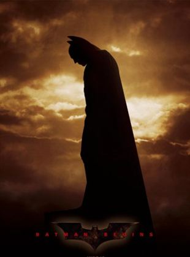

Filmes em cartaz (até 31/09)
Homem Aranha 2

Em Homem-Aranha 2, após derrotar o Duende Verde, a vida de Peter Parker (Tobey Maguire) muda por completo. Enquanto precisa lidar com seus problemas particulares Peter recebe ainda uma má notícia: o surgimento do Dr. Octopus (Alfred Molina), um homem que possui tentáculos presos ao corpo.
Batman Begins
Marcado pelo assassinato de seus pais quando ainda era criança, o milionário Bruce Wayne (Christian Bale) decide viajar pelo mundo em busca de encontrar meios que lhe permitam combater a injustiça e provocar medo em seus adversários. Após retornar a Gotham City, sua cidade-natal, ele idealiza seu alter-ego: Batman, um justiceiro mascarado que usa força, inteligência e um arsenal tecnológico para combater o crime.
X-Men: Primeira Classe

Em X-Men: Primeira Classe, Charles Xavier conhece Erik Lehnsherr, filho de judeus que foram assassinados pelos nazistas durante a Segunda Guerra Mundial. Erik apenas escapou graças ao seu poder mutante de controlar metais, que permitiu que fugisse para a França. Charles e Erik logo se tornam bons amigos. Em 1965, Charles decide usar seus poderes psíquicos para ensinar jovens alunos mutantes a usarem seus dons para fins pacíficos.